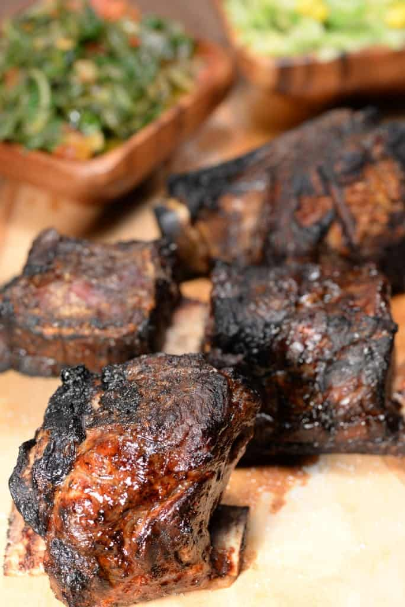
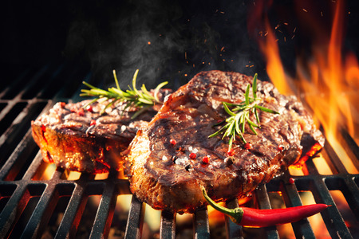
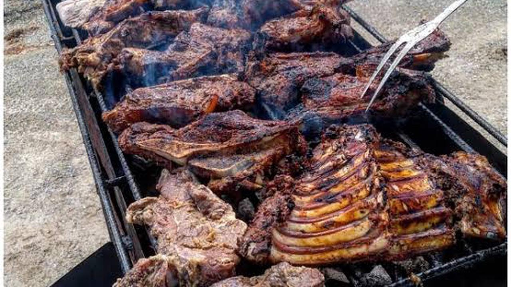

Nyama Choma

1st on our list is Nyama Choma, the national dish of Kenya. Kenyan traditions
are all about socializing with friends and family, and what better way to socialize
with those you love than an epic back yard bbq. In Kenya,
typically goat or lamb will be used in smaller gatherings, and up to an entire cow
for bigger occasions like weddings.
For this recipe, use which ever one you prefer.
Here's what you will need:
- Large cuts of goat, beef, or lamb.
- A large charcoal grill (or perhaps multiple grills!)
- Salt and spices
- Family and friends to share your hard cooked meal with!
Spice it how you like it, or you can use this special Kenyan marinade-
(good for 5-6 lbs of meat, increase as needed) -
- 10 cloves of garlic
- 1 onion
- 1 juiced lemon
- aprox. 1 inch long peice of ginger
- 2 tablespoons ground cumin
- 2 1/2 tablespoons ground paprika
- 1 1/1 tablespoon of salt
- 2 stock cubes
- 2 bird eye chili's (thai chilli)
- 6 sprigs of fresh rosemary

Preperation:
- Combine all the ingredients into a large bowl (you can mix by hand or use
a food processor/blender, just be sure to leave plenty of texture)
- Cut the sections of meat into manageable portions
- Cut slits 1 - 2 inches deep into the large peices of meat
- Place the meat into the bowl and massage the marinade into the meat
(be sure to get it into the slits you cut earlier)
- Place the marinated meat into plastic bins or wrap with tinfoil and refrigerate,
let sit overnight or at least 2-3 hours.
(you'll want to save any remaning marinade for basting later on.)
Now that the meat is marinading, here are some tasty Kenyan side dishes that
will go great with your nyama choma.Click Here!
Time for MOTO!(fire)

- Heat the grill (or grills) so that the coals burning at a high heat
- Invite your friends and family over for a day of fun around the grill!
Now the grill is hot (but not too hot) and you have your
good sized portions of meat ready for the moto(fire)
the next steps are the easiest but also the most important.
- Place the large portions of meat directly onto the grill
(be sure to allow a small gap between peices)
- Cook on low heat, turning every twenty to thirty minutes